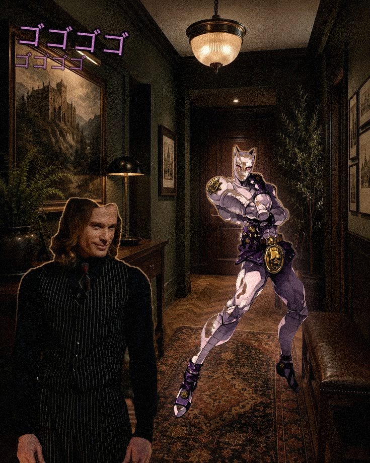
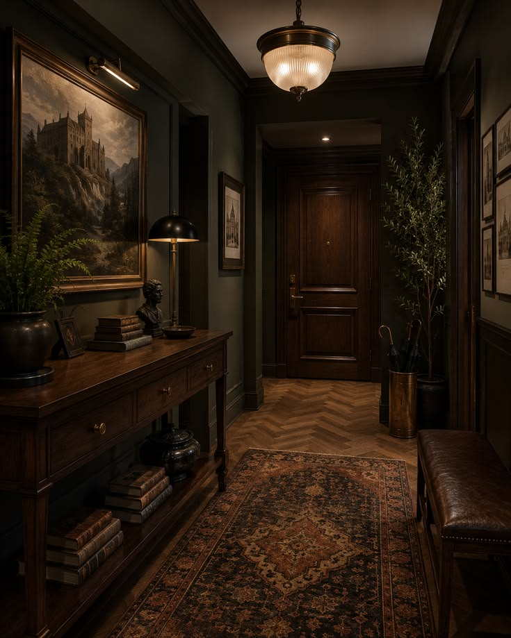

1. Bem-vindo ao Grau 8 — Bônus
Este grau é um extra, além dos 7 do curso principal. Ele pega a técnica de Composição Avançada do Grau 6 e aplica em um estilo bem específico e divertido: fazer parecer que um elemento gráfico — uma criatura, um "poder", uma aura — está sendo invocado atrás de uma pessoa, com brilho e efeitos de luz.
🎯 Ao final deste guia você vai saber:
- Recortar um sujeito com fundo não uniforme (sem chroma key)
- Aplicar luz de contorno (rim light) para "colar" o elemento na cena
- Criar uma aura/brilho colorido atrás de um elemento
- Usar texto de efeito (onomatopeia) como elemento gráfico
- Unificar tudo com grão, vinheta e temperatura de cor — igual ao Grau 6
2. O Exemplo Completo
Este é um exemplo de referência, montado combinando uma foto de pessoa com uma ilustração de personagem, aplicando todas as técnicas deste grau:

3. Recorte com Fundo Não Uniforme
No Grau 1, remover fundo era fácil porque o fundo era liso. Fotos reais (retratos, fotos de ambiente) têm fundo com várias cores e texturas diferentes — a Seleção Rápida sozinha não dá conta.
2. Selecionar e Máscara (Grau 6) → pincel Aperfeiçoar Borda nos contornos difíceis (cabelo, ombros)
3. Ative Decontaminar Cores se sobrar qualquer resquício do fundo antigo
4. Saída para "Nova Camada com Máscara"
4. Luz de Contorno (Rim Light)
Um brilho fino na borda voltada para a fonte de luz da cena faz o elemento parecer parte dela, não colado por cima.
2. Modo de mesclagem "Linear Dodge (Add)" ou "Tela" (Grau 2)
3. Pincel macio, cor quente clara, pinte só na borda voltada para a luz da cena (topo, ombro)
4. Reduza a Opacidade até ficar sutil
5. Auras e Brilhos Coloridos
Uma aura é só um gradiente radial colorido, numa camada abaixo do elemento, desfocado nas bordas.
2. Ferramenta Gradiente (Grau 2), radial, cor da aura no centro → transparente nas bordas
3. Desfoque Gaussiano leve (Grau 5) para suavizar
4. Modo de mesclagem "Tela" ou "Linear Dodge", opacidade a gosto
6. Texto de Efeito como Elemento Gráfico
Mesma lógica dos Estilos de Camada do Grau 4 (Contorno + Brilho), aplicada em texto de impacto/onomatopeia.
2. Estilo de Camada → Contorno grosso + Brilho Externo colorido (Grau 4)
3. Posicione em um canto vazio da composição, sem cobrir o rosto do sujeito
7. Unificando Tudo
Recapitulando o Grau 6, agora com foco neste estilo específico:
| Técnica | Onde já foi ensinada |
|---|---|
| Camada de cor global (gel quente/frio) | Grau 6, capítulo 11 |
| Ruído/grão por cima de tudo | Grau 6, capítulo 9 |
| Sombra de contato para o sujeito "pisar" na cena | Grau 6, capítulo 8 |
| Vinheta escurecendo as bordas | Novo — Filtro → Correção de Lente → aba Personalizado → Quantidade negativa |
8. Desafio Bônus — Duas Fontes de Luz
9. Prática — Sua Invocação
Combine uma foto sua (ou de qualquer pessoa) com um elemento gráfico de sua escolha, aplicando pelo menos 4 técnicas deste grau.
Material de apoio (opcional)
Sem cenário à mão? Baixe este material — um corredor interno, com boa profundidade e uma fonte de luz central, ótimo para testar luz de contorno e aura:

{kind=link}
E se quiser reproduzir o exemplo do capítulo 2 exatamente com os mesmos elementos que usei, os dois estão aqui também:
{kind=link}
{kind=link}
☐ Luz de contorno aplicada
☐ Aura/brilho atrás do elemento
☐ Texto de efeito (opcional, mas recomendado)
☐ Grão + vinheta + cor global unificando tudo
10. Atalhos do Grau 8 — Cola Rápida
| Ação | Caminho |
|---|---|
| Selecionar e Máscara | Barra de Opções, com uma seleção ativa |
| Clipping mask | Alt + clique entre camadas |
| Ferramenta Gradiente (radial) | Tecla G |
| Vinheta | Filtro → Correção de Lente → Personalizado |
11. Erros Comuns do Grau 8
Falta desfoque. Aumente o Desfoque Gaussiano na camada da aura até a borda sumir gradualmente, sem contorno visível.
Pinte só no lado voltado para a fonte de luz da cena — luz de contorno em todos os lados ao mesmo tempo não existe na realidade e entrega a montagem.
Contorno grosso demais ou cor parecida com o fundo. Aumente o contraste entre o contorno e o fundo da cena.
12. Checklist Final — Fim do Curso Completo
✓ Antes de encerrar o Grau 8, confirme:
- ✅ Recortei um sujeito com fundo não uniforme
- ✅ Apliquei luz de contorno na direção certa
- ✅ Criei uma aura/brilho colorido
- ✅ Testei texto de efeito como elemento gráfico
- ✅ Unifiquei com grão, vinheta e cor global